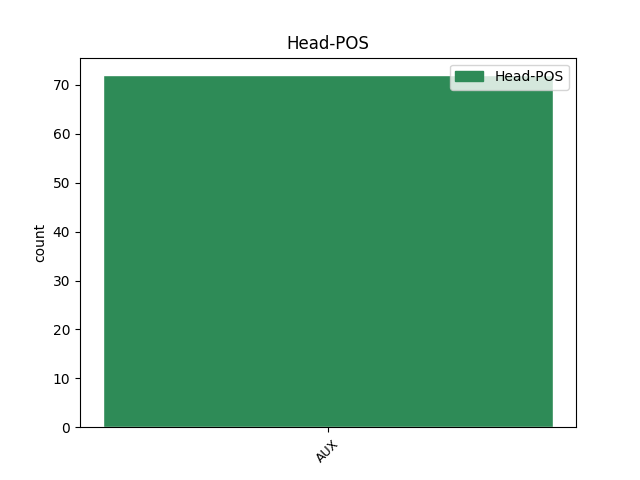

Distribution of features within this leaf


Agreement Rules sorted by frequency.
- When the dependent token is the parataxis(parataxis) of the head token, and the head token is AUX and the dependent token is AUX.
1 Մյուս _ _ _ _ 0 _ _ _
2 դեպքերում _ _ _ _ 0 _ _ _
3 « _ _ _ _ 0 _ _ _
4 մրցապայքարը _ _ _ _ 0 _ _ _
5 » _ _ _ _ 0 _ _ _
6 կարծում _ _ _ _ 0 _ _ _
7 եմ եմ AUX _ Aspect=Imp|Mood=Ind|Number=Sing|Person=1|Polarity=Pos|Tense=Pres|VerbForm=Fin 12 parataxis _ LTranslit=em|Translit=em
8 հերթական _ _ _ _ 0 _ _ _
9 անտաղանդ _ _ _ _ 0 _ _ _
10 մարիոնետային _ _ _ _ 0 _ _ _
11 բեմադրությունը _ _ _ _ 0 _ _ _
12 կլինի լինել AUX _ Aspect=Prosp|Mood=Cnd|Number=Sing|Person=3|Polarity=Pos|Tense=Pres|VerbForm=Fin 0 _ _ _
13 : _ _ _ _ 0 _ _ _
Disagree Examples:
1 1987-ի _ _ _ _ 0 _ _ _
2 մայիսյան _ _ _ _ 0 _ _ _
3 էդ _ _ _ _ 0 _ _ _
4 օրը _ _ _ _ 0 _ _ _
5 պիտի _ _ _ _ 0 _ _ _
6 որ _ _ _ _ 0 _ _ _
7 տասնվեցուկես _ _ _ _ 0 _ _ _
8 տարեկան _ _ _ _ 0 _ _ _
9 լիներ _ _ _ _ 0 _ _ _
10 , _ _ _ _ 0 _ _ _
11 չնայած _ _ _ _ 0 _ _ _
12 մայրը _ _ _ _ 0 _ _ _
13 հետո _ _ _ _ 0 _ _ _
14 , _ _ _ _ 0 _ _ _
15 երբ _ _ _ _ 0 _ _ _
16 սայթաքելու _ _ _ _ 0 _ _ _
17 հետևանքով _ _ _ _ 0 _ _ _
18 աղջկա _ _ _ _ 0 _ _ _
19 փորը _ _ _ _ 0 _ _ _
20 սկսեց _ _ _ _ 0 _ _ _
21 կլորանալ _ _ _ _ 0 _ _ _
22 , _ _ _ _ 0 _ _ _
23 ասում _ _ _ _ 0 _ _ _
24 էր եմ AUX _ Aspect=Imp|Mood=Ind|Number=Sing|Person=3|Polarity=Pos|Tense=Imp|VerbForm=Fin 0 _ _ _
25 . _ _ _ _ 0 _ _ _
26 « _ _ _ _ 0 _ _ _
27 Փաստորեն _ _ _ _ 0 _ _ _
28 տասնյոթը _ _ _ _ 0 _ _ _
29 վաղուց _ _ _ _ 0 _ _ _
30 է եմ AUX _ Aspect=Imp|Mood=Ind|Number=Sing|Person=3|Polarity=Pos|Tense=Pres|VerbForm=Fin 24 parataxis _ LTranslit=em|Translit=ē
31 լրացել _ _ _ _ 0 _ _ _
32 » _ _ _ _ 0 _ _ _
33 ։ _ _ _ _ 0 _ _ _
1 « _ _ _ _ 0 _ _ _
2 Այս _ _ _ _ 0 _ _ _
3 բոլորը _ _ _ _ 0 _ _ _
4 քո _ _ _ _ 0 _ _ _
5 պատճառով _ _ _ _ 0 _ _ _
6 է եմ AUX _ Aspect=Imp|Mood=Ind|Number=Sing|Person=3|Polarity=Pos|Tense=Pres|VerbForm=Fin 0 _ _ _
7 , _ _ _ _ 0 _ _ _
8 — _ _ _ _ 0 _ _ _
9 ասում _ _ _ _ 0 _ _ _
10 էր եմ AUX _ Aspect=Imp|Mood=Ind|Number=Sing|Person=3|Polarity=Pos|Tense=Imp|VerbForm=Fin 6 parataxis _ LTranslit=em|Translit=ēr
11 Լուկրեցիան _ _ _ _ 0 _ _ _
12 , _ _ _ _ 0 _ _ _
13 — _ _ _ _ 0 _ _ _
14 քեզ _ _ _ _ 0 _ _ _
15 տանել _ _ _ _ 0 _ _ _
16 են _ _ _ _ 0 _ _ _
17 ուզում _ _ _ _ 0 _ _ _
18 չար _ _ _ _ 0 _ _ _
19 մարդիկ _ _ _ _ 0 _ _ _
20 » _ _ _ _ 0 _ _ _
21 ... _ _ _ _ 0 _ _ _
1 Համա _ _ _ _ 0 _ _ _
2 դեբիլ _ _ _ _ 0 _ _ _
3 կառավարիչների _ _ _ _ 0 _ _ _
4 կառավարած _ _ _ _ 0 _ _ _
5 երկրին _ _ _ _ 0 _ _ _
6 ոչ _ _ _ _ 0 _ _ _
7 մի _ _ _ _ 0 _ _ _
8 կախարդություն _ _ _ _ 0 _ _ _
9 չի եմ AUX _ Aspect=Imp|Mood=Ind|Number=Sing|Person=3|Polarity=Neg|Tense=Pres|VerbForm=Fin 0 _ _ _
10 օգնի _ _ _ _ 0 _ _ _
11 . _ _ _ _ 0 _ _ _
12 ապրուստը _ _ _ _ 0 _ _ _
13 գնալով _ _ _ _ 0 _ _ _
14 վատանում _ _ _ _ 0 _ _ _
15 էր եմ AUX _ Aspect=Imp|Mood=Ind|Number=Sing|Person=3|Polarity=Pos|Tense=Imp|VerbForm=Fin 9 parataxis _ LTranslit=em|Translit=ēr
16 ( _ _ _ _ 0 _ _ _
17 անկախ _ _ _ _ 0 _ _ _
18 արքայական _ _ _ _ 0 _ _ _
19 հաշվիչ _ _ _ _ 0 _ _ _
20 պալատի _ _ _ _ 0 _ _ _
21 լավատեսական _ _ _ _ 0 _ _ _
22 հաշվարկներից _ _ _ _ 0 _ _ _
23 ) _ _ _ _ 0 _ _ _
24 , _ _ _ _ 0 _ _ _
25 երաշտն _ _ _ _ 0 _ _ _
26 էն _ _ _ _ 0 _ _ _
27 կողմից _ _ _ _ 0 _ _ _
28 էր _ _ _ _ 0 _ _ _
29 վրա _ _ _ _ 0 _ _ _
30 տալիս _ _ _ _ 0 _ _ _
31 , _ _ _ _ 0 _ _ _
32 կողքի _ _ _ _ 0 _ _ _
33 հարևաննին _ _ _ _ 0 _ _ _
34 ՝ _ _ _ _ 0 _ _ _
35 էն _ _ _ _ 0 _ _ _
36 ։ _ _ _ _ 0 _ _ _
1 Այն _ _ _ _ 0 _ _ _
2 մշտապես _ _ _ _ 0 _ _ _
3 լեփ _ _ _ _ 0 _ _ _
4 - _ _ _ _ 0 _ _ _
5 լեցուն _ _ _ _ 0 _ _ _
6 դահլիճներում _ _ _ _ 0 _ _ _
7 է եմ AUX _ Aspect=Imp|Mood=Ind|Number=Sing|Person=3|Polarity=Pos|Tense=Pres|VerbForm=Fin 0 _ _ _
8 անցել _ _ _ _ 0 _ _ _
9 . _ _ _ _ 0 _ _ _
10 ներգրավված _ _ _ _ 0 _ _ _
11 էր եմ AUX _ Aspect=Imp|Mood=Ind|Number=Sing|Person=3|Polarity=Pos|Tense=Imp|VerbForm=Fin 7 parataxis _ LTranslit=em|Translit=ēr
12 հրաշալի _ _ _ _ 0 _ _ _
13 դերասանական _ _ _ _ 0 _ _ _
14 կազմ _ _ _ _ 0 _ _ _
15 : _ _ _ _ 0 _ _ _
1 Քայլում _ _ _ _ 0 _ _ _
2 էին _ _ _ _ 0 _ _ _
3 նրանք _ _ _ _ 0 _ _ _
4 ՝ _ _ _ _ 0 _ _ _
5 մեր _ _ _ _ 0 _ _ _
6 արթնացած _ _ _ _ 0 _ _ _
7 հիշողության _ _ _ _ 0 _ _ _
8 , _ _ _ _ 0 _ _ _
9 մեր _ _ _ _ 0 _ _ _
10 քննախույզ _ _ _ _ 0 _ _ _
11 հայացքների _ _ _ _ 0 _ _ _
12 միջով _ _ _ _ 0 _ _ _
13 , _ _ _ _ 0 _ _ _
14 դեպի _ _ _ _ 0 _ _ _
15 սև _ _ _ _ 0 _ _ _
16 քարից _ _ _ _ 0 _ _ _
17 տունը _ _ _ _ 0 _ _ _
18 , _ _ _ _ 0 _ _ _
19 որին _ _ _ _ 0 _ _ _
20 դեռ _ _ _ _ 0 _ _ _
21 չէինք _ _ _ _ 0 _ _ _
22 հասցրել _ _ _ _ 0 _ _ _
23 նոր _ _ _ _ 0 _ _ _
24 հայացքով _ _ _ _ 0 _ _ _
25 նայել _ _ _ _ 0 _ _ _
26 ու _ _ _ _ 0 _ _ _
27 զարմանալ _ _ _ _ 0 _ _ _
28 մինչև _ _ _ _ 0 _ _ _
29 հիմա _ _ _ _ 0 _ _ _
30 մեր _ _ _ _ 0 _ _ _
31 չտեսածի _ _ _ _ 0 _ _ _
32 համար _ _ _ _ 0 _ _ _
33 , _ _ _ _ 0 _ _ _
34 և _ _ _ _ 0 _ _ _
35 ով _ _ _ _ 0 _ _ _
36 նայում _ _ _ _ 0 _ _ _
37 էր _ _ _ _ 0 _ _ _
38 նրանց _ _ _ _ 0 _ _ _
39 , _ _ _ _ 0 _ _ _
40 կարող _ _ _ _ 0 _ _ _
41 էր _ _ _ _ 0 _ _ _
42 ասել _ _ _ _ 0 _ _ _
43 , _ _ _ _ 0 _ _ _
44 որ _ _ _ _ 0 _ _ _
45 այդ _ _ _ _ 0 _ _ _
46 կինը _ _ _ _ 0 _ _ _
47 մեր _ _ _ _ 0 _ _ _
48 Մարտինի _ _ _ _ 0 _ _ _
49 կինը _ _ _ _ 0 _ _ _
50 չէ եմ AUX _ Aspect=Imp|Mood=Ind|Number=Sing|Person=3|Polarity=Neg|Tense=Pres|VerbForm=Fin 0 _ _ _
51 ( _ _ _ _ 0 _ _ _
52 որին _ _ _ _ 0 _ _ _
53 մինչև _ _ _ _ 0 _ _ _
54 հիմա _ _ _ _ 0 _ _ _
55 չէինք եմ AUX _ Aspect=Imp|Mood=Ind|Number=Plur|Person=1|Polarity=Neg|Tense=Imp|VerbForm=Fin 50 parataxis _ LTranslit=em|Translit=čēink’
56 տեսել _ _ _ _ 0 _ _ _
57 ) _ _ _ _ 0 _ _ _
58 , _ _ _ _ 0 _ _ _
59 թեև _ _ _ _ 0 _ _ _
60 նրանք _ _ _ _ 0 _ _ _
61 ոչ _ _ _ _ 0 _ _ _
62 պատահաբար _ _ _ _ 0 _ _ _
63 են _ _ _ _ 0 _ _ _
64 հայտնվել _ _ _ _ 0 _ _ _
65 կողք _ _ _ _ 0 _ _ _
66 - _ _ _ _ 0 _ _ _
67 կողքի _ _ _ _ 0 _ _ _
68 , _ _ _ _ 0 _ _ _
69 ոչ _ _ _ _ 0 _ _ _
70 էլ _ _ _ _ 0 _ _ _
71 ժամանակավորապես _ _ _ _ 0 _ _ _
72 , _ _ _ _ 0 _ _ _
73 որ _ _ _ _ 0 _ _ _
74 սերը _ _ _ _ 0 _ _ _
75 կամ _ _ _ _ 0 _ _ _
76 նույնիսկ _ _ _ _ 0 _ _ _
77 մեղքը _ _ _ _ 0 _ _ _
78 չի _ _ _ _ 0 _ _ _
79 միացրել _ _ _ _ 0 _ _ _
80 նրանց _ _ _ _ 0 _ _ _
81 , _ _ _ _ 0 _ _ _
82 թեև _ _ _ _ 0 _ _ _
83 , _ _ _ _ 0 _ _ _
84 մյուս _ _ _ _ 0 _ _ _
85 կողմից _ _ _ _ 0 _ _ _
86 էլ _ _ _ _ 0 _ _ _
87 , _ _ _ _ 0 _ _ _
88 կարծես _ _ _ _ 0 _ _ _
89 թե _ _ _ _ 0 _ _ _
90 ՛ _ _ _ _ 0 _ _ _
91 սեր _ _ _ _ 0 _ _ _
92 կար _ _ _ _ 0 _ _ _
93 , _ _ _ _ 0 _ _ _
94 թե _ _ _ _ 0 _ _ _
95 ՛ _ _ _ _ 0 _ _ _
96 մեղք _ _ _ _ 0 _ _ _
97 ։ _ _ _ _ 0 _ _ _